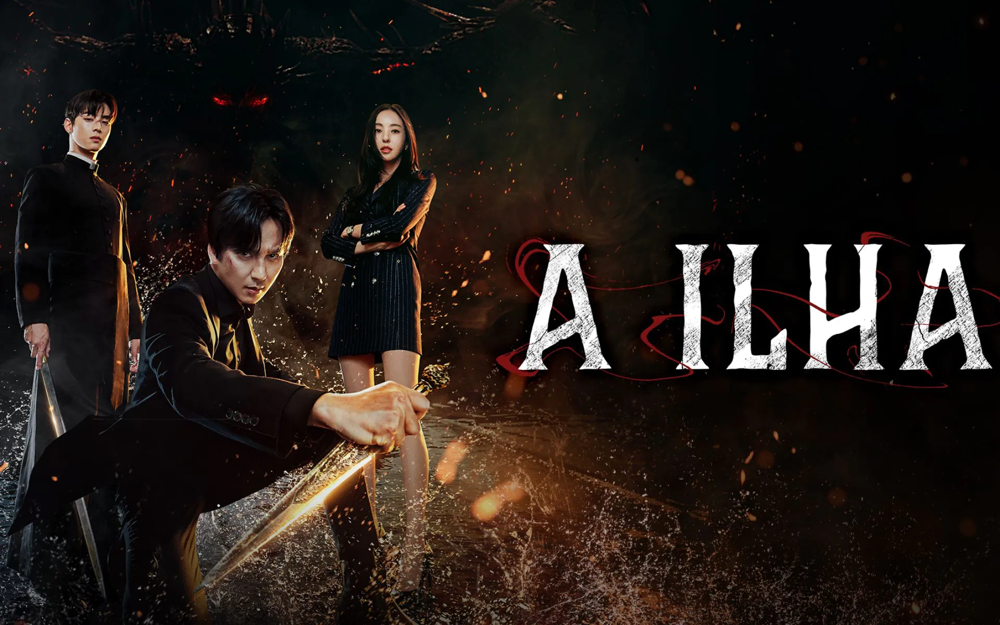

Assista aos seus doramas favoritos
Um protótipo lindo e funcional inspirado no Viki.

▶
Um protótipo lindo e funcional inspirado no Viki.

Troque legendas — português, inglês, coreano.
Adicione ao seu watchlist os doramas que deseja assistir.
Layout interativo.